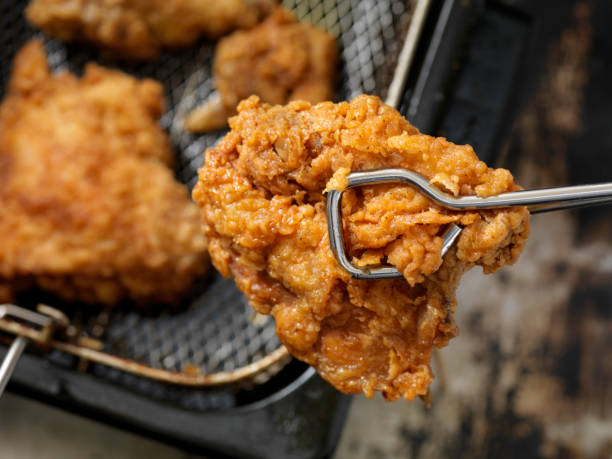

Chicken Tikka Masala

Description
Chicken Tikka Masala is a popular Indian curry dish featuring tender chunks of marinated chicken in a rich, creamy tomato-based sauce. This flavorful meal is typically served with rice or naan bread.
Ingredients
- Chicken breast
- Yogurt
- Lemon juice
- Spices (garam masala, turmeric, cumin)
- Onion
- Garlic and ginger
- Tomato puree
- Heavy cream
- Butter
- Fresh cilantro
Steps
- Marinate chicken in yogurt and spices for at least 1 hour.
- Grill or bake the marinated chicken until cooked through.
- In a large pan, sauté onions, garlic, and ginger.
- Add tomato puree and spices, simmer for 10 minutes.
- Stir in cream and butter.
- Add the cooked chicken to the sauce.
- Simmer for 5-10 minutes until heated through.
- Garnish with fresh cilantro and serve with rice or naan.